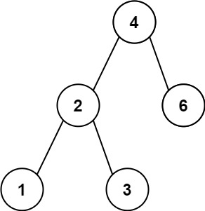
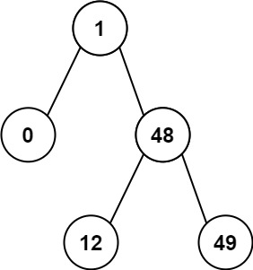

books / company-solutions / Tree
530. 二叉搜索树的最小绝对差
| 题目信息 | 内容 |
|---|---|
| 难度 | 简单 |
| 核心模式 | BST 中序遍历有序，取相邻差值最小 |
| 时间复杂度 | O(n) |
| 空间复杂度 | O(h) |
题目与约束
给你一个二叉搜索树的根节点 root ，返回 树中任意两不同节点值之间的最小差值 。
差值是一个正数，其数值等于两值之差的绝对值。
示例 1：

<strong>输入：</strong>root = [4,2,6,1,3]
<strong>输出：</strong>1
示例 2：

<strong>输入：</strong>root = [1,0,48,null,null,12,49]
<strong>输出：</strong>1
提示：
-
树中节点的数目范围是
[2, 104] -
0 <= Node.val <= 105
注意：本题与 783 https://leetcode.cn/problems/minimum-distance-between-bst-nodes/ 相同
核心不变量
二叉搜索树的中序遍历结果是一个严格递增序列，全局最小差值一定出现在这个序列中相邻的两个元素之间。
完整推导
思路推导
-
直觉与痛点（为什么不能两两暴力比较）：任意两节点值的最小差值，暴力做法是收集所有值两两相减，时间
O(n²)。但题目给出的是一棵 二叉搜索树，这个额外性质必须用上，否则就浪费了条件。 -
破局思路（利用 BST 的有序性）：BST 的性质是「左子树全部小于根、右子树全部大于根」。对它做 中序遍历（左 → 根 → 右），得到的节点值序列天然是 严格递增 的。在一个递增序列中，最小差值只会出现在相邻元素之间——隔着更远的元素，差值只会更大。
-
实现（边走边比）：中序遍历时用一个
prev变量记住「上一个访问到的节点值」。每访问到一个新节点，就用node.val - prev更新答案，再把prev更新为当前值。这样只需一次遍历，不需要把整个数组存下来。
小例子：[4,2,6,1,3] 的中序序列是 1,2,3,4,6，相邻差值 1,1,1,2，最小为 1。
Java 实现（中序遍历 + 前驱指针）
/**
* Definition for a binary tree node.
* public class TreeNode {
* int val;
* TreeNode left;
* TreeNode right;
* TreeNode() {}
* TreeNode(int val) { this.val = val; }
* TreeNode(int val, TreeNode left, TreeNode right) {
* this.val = val;
* this.left = left;
* this.right = right;
* }
* }
*/
class Solution {
// 记录上一个被访问的节点值；用包装类以便判断是否为空
private Integer prev = null;
// 记录当前最小差值
private int ans = Integer.MAX_VALUE;
public int getMinimumDifference(TreeNode root) {
inorder(root);
return ans;
}
private void inorder(TreeNode node) {
if (node == null) {
return;
}
// 1. 递归左子树
inorder(node.left);
// 2. 处理当前节点：与中序前驱作差（中序有序，差值必非负）
if (prev != null) {
ans = Math.min(ans, node.val - prev);
}
prev = node.val;
// 3. 递归右子树
inorder(node.right);
}
}
复杂度
- 时间：O(n)，每个节点恰好被访问一次。
- 空间：O(h)，递归栈深度等于树高
h；最坏（退化成链）为O(n)，平衡时为O(log n)。没有额外存储整个序列。
易错点与扩展（面试高频考点）
- 不要用全局两两比较：
O(n²)能过小数据，但不是考点；必须点出「BST 中序有序」这一性质才能拿到O(n)。 - 前驱要判空：第一个访问到的节点前方没有前驱，
node.val - prev会出错，必须用prev != null守卫。 - 差值方向：中序递增，
node.val - prev永远非负，不必取绝对值；若写成绝对值反而暴露对有序性没吃透。 - 栈溢出风险：节点数上限
10^4，若树退化成链，朴素递归可能逼近调用栈上限；可改用显式栈做迭代中序，或面试时说明这一点。 - 举一反三：同类「BST 中序有序」的题目还有 98 验证 BST、501 众数、530/783 最小差值，核心都是把 BST 问题转成有序序列问题。
力扣原题
C++ 实现
/**
* Definition for a binary tree node.
* struct TreeNode {
* int val;
* TreeNode *left;
* TreeNode *right;
* TreeNode() : val(0), left(nullptr), right(nullptr) {}
* TreeNode(int x) : val(x), left(nullptr), right(nullptr) {}
* TreeNode(int x, TreeNode *left, TreeNode *right) : val(x), left(left), right(right) {}
* };
*/
class Solution {
public:
int getMinimumDifference(TreeNode* root) {
int ans = INT_MAX;
TreeNode* prev = nullptr;
inorder(root, prev, ans);
return ans;
}
private:
void inorder(TreeNode* node, TreeNode*& prev, int& ans) {
if (!node) return;
inorder(node->left, prev, ans); // 左
if (prev) ans = min(ans, node->val - prev->val); // 根：与中序前驱作差
prev = node;
inorder(node->right, prev, ans); // 右
}
};
Python 实现
# Definition for a binary tree node.
# class TreeNode:
# def __init__(self, val=0, left=None, right=None):
# self.val = val
# self.left = left
# self.right = right
class Solution:
def getMinimumDifference(self, root: Optional[TreeNode]) -> int:
self.prev = None
self.ans = float('inf')
def inorder(node: Optional[TreeNode]) -> None:
if not node:
return
inorder(node.left) # 左
if self.prev is not None: # 根：与前驱作差
self.ans = min(self.ans, node.val - self.prev)
self.prev = node.val
inorder(node.right) # 右
inorder(root)
return self.ans